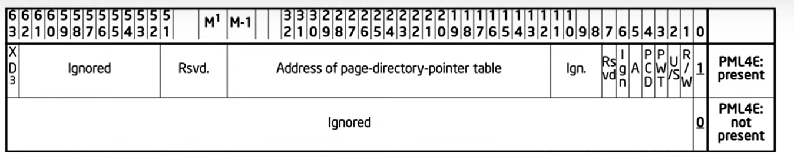

There are 3 possible interpretations for the PDPTE (page directory pointer table entry). with bit 0 (present bit) = 0, and two options when bit[0] ==1.

Example
PXE is WinDbg for PML4
pfn - page frame number